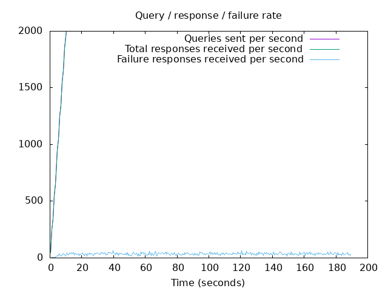
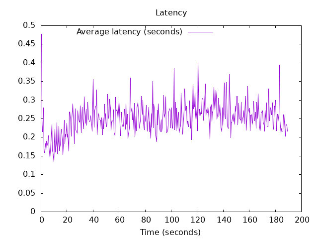

DNS Resolution Performance Testing Tool Version 2.14.0 [Status] Command line: resperf -P 20250619-1411.gnuplot -M doh -s 79.127.218.224 -O doh-uri=https://protective.joindns4.eu/dns-query -d domains_shuffled.list -C 500 -m 2000 -b 1400 -q 500000 -R -r 10 -c 180 -t 30 -F 0 [Status] Sending [Status] Ramp-up done, sending constant traffic [Status] Waiting for more responses [Status] Testing complete Statistics: Queries sent: 369999 Queries completed: 369999 Queries lost: 0 Response codes: NOERROR 250514 (67.71%), SERVFAIL 6738 (1.82%), NXDOMAIN 112747 (30.47%) Run time (s): 219.764355 Maximum throughput: 2000.000000 qps Lost at that point: 0.00% Connection attempts: 814 (540 successful, 66.34%) DNS-over-HTTPS statistics: HTTP/2 return codes: 200: 369999
 